一.来源：
摘自网络
二.Fragment初探： Fragment是activity的界面中的一部分或一种行为。你可以把多个Fragment们组合到一个activity中来创建一个多面界面，并且你可以在多个activity中重用一个Fragment。你可以把Fragment认为模块化的一段activity，它具有自己的生命周期，接收它自己的事件，并可以在activity运行时被添加或删除。
Fragment不能独立存在，它必须嵌入到activity中，而且Fragment的生命周期直接受所在的activity的影响。例如：当activity暂停时，它拥有的所有的Fragment们都暂停了，当activity销毁时，它拥有的所有Fragment们都被销毁。然而，当activity运行时（在onResume()之后，onPause()之前），你可以单独地操作每个Fragment，比如添加或删除它们。当你在执行上述针对Fragment的事务时，你可以将事务添加到一个栈中，这个栈被activity管理，栈中的每一条都是一个Fragment的一次事务。有了这个栈，就可以反向执行Fragment的事务，这样就可以在Fragment级支持“返回”键（向后导航）。
当向activity中添加一个Fragment时，它须置于ViewGroup控件中，并且需定义Fragment自己的界面。你可以在layoutxml文件中声明Fragment，元素为：；也可以在代码中创建Fragment，然后把它加入到ViewGroup控件中。然而，Fragment不一定非要放在activity的界面中，它可以隐藏在后台为actvitiy工作。
设计的哲学：
为了让界面可以在平板上更好地展示，Android在3.0版本引入了Fragment(碎片)功能，通过官方文档中的这张图片可以很明显地看到Fragment的好处：
注：左边为平板，右边为手持设备。
三.Fragment的生命周期： 因为Fragment必须嵌入在Acitivity中使用，所以Fragment的生命周期和它所在的Activity是密切相关的。
如果Activity是暂停状态，其中所有的Fragment都是暂停状态；如果Activity是stopped状态，这个Activity中所有的Fragment都不能被启动；如果Activity被销毁，那么它其中的所有Fragment都会被销毁。
但是，当Activity在活动状态，可以独立控制Fragment的状态，比如加上或者移除Fragment。
当这样进行fragment transaction（转换）的时候，可以把fragment放入Activity的back stack中，这样用户就可以进行返回操作。
使用Fragment时，需要继承Fragment或者Fragment的子类（DialogFragment, ListFragment, PreferenceFragment, WebViewFragment），所以Fragment的代码看起来和Activity的类似。
每当创建一个Fragment时，首先添加以下三个回调方法：
onCreate()：系统在创建Fragment的时候调用这个方法，这里应该初始化相关的组件，一些即便是被暂停或者被停止时依然需要保留的东西。
方式一：添加Fragment到Activity的布局文件当中
第二种方式比较复杂，但也是唯一一种可以在运行时控制fragment的方式（加载、移除、替换）。
下面将分别介绍一下。
四.在Activity的布局文件中添加Fragment：（不推荐） 平板的模拟器参数如下：
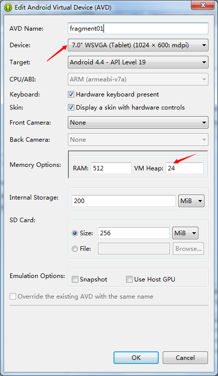
然后新建一个工程文件。然后继续如下步骤：
（1）新建文件fragment_hello.xml和HelloFragment.java：
fragment_hello.xml代码如下：（即Fragment的布局文件）
1 2 3 4 5 6 7 8 9 10 11 12 13 14 15 <?xml version="1.0" encoding="utf-8"?> <LinearLayout xmlns:android="http://schemas.android.com/apk/res/android" android:layout_width="match_parent" android:layout_height="match_parent" android:orientation="vertical" > <EditText android:layout_width="match_parent" android:layout_height="wrap_content" android:hint="请输入内容"/> <RatingBar android:id="@+id/ratingBar1" android:layout_width="wrap_content" android:layout_height="wrap_content" /> </LinearLayout>
HelloFragment.java代码如下：
1 2 3 4 5 6 7 8 9 10 11 12 13 14 15 16 17 18 19 20 21 22 23 24 25 26 27 package com.example.m01_fragment01; import android.app.Fragment; import android.os.Bundle; import android.view.LayoutInflater; import android.view.View; import android.view.ViewGroup; public class HelloFragment extends Fragment { @Override public void onCreate(Bundle savedInstanceState) { super.onCreate(savedInstanceState); } @Override public View onCreateView(LayoutInflater inflater, ViewGroup container, Bundle savedInstanceState) { View view = inflater.inflate(R.layout.fragment_hello, null); // View android.view.LayoutInflater.inflate(int resource, ViewGroup root) return view; } @Override public void onPause() { super.onPause(); } }
重点在于第19和20行，通过inflate()方法将自定义的fragment的布局加载进来。
19行代码中，第二个参数中，如果布局没有根，那就用null。
注：上方代码中，因为我们的程序是面对Android 4.0以上版本的，所以导入Fragment的包时，选择第一个：android.app.Fragment
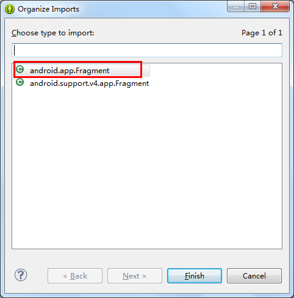
（2）将Fragment添加到Activity的布局中：
修改activity_main.xml的代码如下：
1 2 3 4 5 6 7 8 9 10 11 12 <LinearLayout xmlns:android="http://schemas.android.com/apk/res/android" xmlns:tools="http://schemas.android.com/tools" android:layout_width="match_parent" android:layout_height="match_parent" tools:context=".MainActivity" > <fragment android:id="@+id/fragment_hello" android:name="com.example.m01_fragment02.HelloFragment" android:layout_width="wrap_content" android:layout_height="wrap_content" /> </LinearLayout>
08行和09行是关键。其中android:name属性填上你自己创建的fragment的完整类名。如下图：
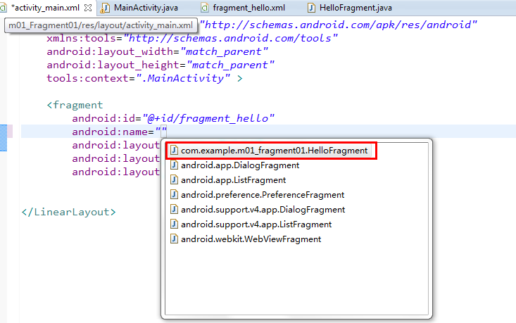
当系统创建这个Activity的布局文件时，系统会实例化每一个fragment，并且调用它们的onCreateView()方法，来获得相应fragment的布局，并将返回值插入fragment标签所在的地方。
运行之后，效果如下：
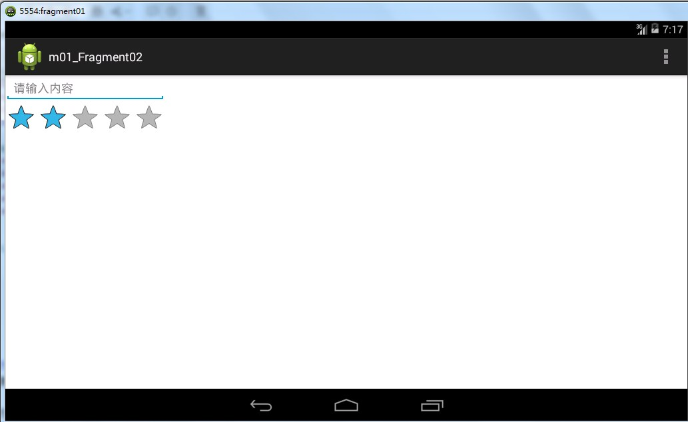
实际上，这种方式在开发中并不推荐，我们来介绍另外一种方法。
五.在activity代码中添加fragment： 【实例】点击左侧fragment中的按钮，弹出右侧的fragment。新建一个工程文件，然后步骤如下：
将activity_main的布局分为两部分：左边占1/4，右边占3/4。修改activity_main.xml的代码如下：
1 2 3 4 5 6 7 8 9 10 11 12 13 14 15 16 17 18 19 20 21 22 23 24 25 26 27 28 29 30 31 32 33 34 <LinearLayout xmlns:android="http://schemas.android.com/apk/res/android" xmlns:tools="http://schemas.android.com/tools" android:layout_width="match_parent" android:layout_height="match_parent" tools:context=".MainActivity" android:orientation="horizontal" > <LinearLayout android:id="@+id/left" android:layout_width="0dp" android:layout_height="match_parent" android:orientation="vertical" android:layout_weight="1" android:background="#00BFFF" > <Button android:id="@+id/button1" android:layout_width="wrap_content" android:layout_height="wrap_content" android:text="显示"/> </LinearLayout> <LinearLayout android:id="@+id/right" android:layout_width="0dp" android:layout_height="match_parent" android:layout_weight="3" android:background="#00FFFF" android:orientation="vertical" > </LinearLayout> </LinearLayout>
上方代码中，一个LinearLayout代表一个Fragment的容器，记得要给每个fragment加一个容器的id。上方代码的布局效果如下：
新建文件fragment_right.xml和RightFragment.java：
1 2 3 4 5 6 7 8 9 10 11 12 13 14 15 16 17 18 19 <?xml version="1.0" encoding="utf-8"?> <LinearLayout xmlns:android="http://schemas.android.com/apk/res/android" android:layout_width="match_parent" android:layout_height="match_parent" android:orientation="vertical" > <TextView android:id="@+id/textView1" android:layout_width="wrap_content" android:layout_height="wrap_content" android:text="新闻内容" /> <Button android:id="@+id/button2" android:layout_width="wrap_content" android:layout_height="wrap_content" android:text="Button" /> </LinearLayout>
RightFragment.java代码如下：
1 2 3 4 5 6 7 8 9 10 11 12 13 14 15 16 17 18 19 20 21 22 23 24 25 26 package com.example.m01_fragment03; import android.app.Fragment; import android.os.Bundle; import android.view.LayoutInflater; import android.view.View; import android.view.ViewGroup; public class RightFragment extends Fragment { @Override public void onCreate(Bundle savedInstanceState) { super.onCreate(savedInstanceState); } @Override public View onCreateView(LayoutInflater inflater, ViewGroup container, Bundle savedInstanceState) { View view = inflater.inflate(R.layout.fragment_right, null); return view; } @Override public void onPause() { super.onPause(); } }
紧接着，我们修改上方onCreateView()方法中的代码，实现点击按钮，能够弹出吐司：
1 2 3 4 5 6 7 8 9 10 11 12 public View onCreateView(LayoutInflater inflater, ViewGroup container, Bundle savedInstanceState) { View view = inflater.inflate(R.layout.fragment_right, null); Button button = (Button)view.findViewById(R.id.button2); button.setOnClickListener(new OnClickListener() { @Override public void onClick(View v) { Toast.makeText(getActivity(), "我是fragment", Toast.LENGTH_SHORT).show(); } }); return view; }
第04行代码：有一个单词view不要忘了。
在activity代码中添加fragment：
1 2 3 4 5 6 7 8 9 10 11 12 13 14 15 16 17 button.setOnClickListener(new OnClickListener() { @Override public void onClick(View v) { //步骤一：添加一个FragmentTransaction的实例 FragmentManager fragmentManager =getFragmentManager(); FragmentTransaction transaction = fragmentManager.beginTransaction(); //步骤二：用add()方法加上Fragment的对象rightFragment RightFragment rightFragment = new RightFragment(); transaction.add(R.id.right, rightFragment); //步骤三：调用commit()方法使得FragmentTransaction实例的改变生效 transaction.commit(); } });
记住上面的三个步骤。
六.Fragment的生命周期初探： 因为Fragment必须嵌入在Acitivity中使用，所以Fragment的生命周期和它所在的Activity是密切相关的。
如果Activity是暂停状态，其中所有的Fragment都是暂停状态；如果Activity是stopped状态，这个Activity中所有的Fragment都不能被启动；如果Activity被销毁，那么它其中的所有Fragment都会被销毁。
但是，当Activity在活动状态，可以独立控制Fragment的状态，比如加上或者移除Fragment。
当这样进行fragment transaction（转换）的时候，可以把fragment放入Activity的back stack中，这样用户就可以进行返回操作。
使用Fragment时，需要继承Fragment或者Fragment的子类（DialogFragment, ListFragment, PreferenceFragment, WebViewFragment），所以Fragment的代码看起来和Activity的类似。
每当创建一个Fragment时，首先添加以下三个回调方法：
onCreate()：系统在创建Fragment的时候调用这个方法，这里应该初始化相关的组件，一些即便是被暂停或者被停止时依然需要保留的东西。
方式一：添加Fragment到Activity的布局文件当中
第二种方式比较复杂，但也是唯一一种可以在运行时控制fragment的方式（加载、移除、替换）。
七.Fragment的生命周期详解： 先来看一下官方文档的图片吧：
我们再把Activity的生命周期和Fragment的生命周期对比一下，就清楚很多了：
我们还是在实例中来看一下Fragment的生命周期吧。
【实例】在MainActivity中加载一个Fragment：（完整版代码如下）
我们所创建的Fragment的布局文件fragment01.xml的代码如下：
1 2 3 4 5 6 7 8 9 10 11 12 13 14 15 16 17 18 <?xml version="1.0" encoding="utf-8"?> <LinearLayout xmlns:android="http://schemas.android.com/apk/res/android" android:layout_width="match_parent" android:layout_height="match_parent" android:orientation="vertical" > <RatingBar android:id="@+id/ratingBar1" android:layout_width="wrap_content" android:layout_height="wrap_content" /> <Button android:id="@+id/button1" android:layout_width="wrap_content" android:layout_height="wrap_content" android:text="Button" /> </LinearLayout>
MyFragment.java代码如下：（注意生命周期中每个方法的作用）
1 2 3 4 5 6 7 8 9 10 11 12 13 14 15 16 17 18 19 20 21 22 23 24 25 26 27 28 29 30 31 32 33 34 35 36 37 38 39 40 41 42 43 44 45 46 47 48 49 50 51 52 53 54 55 56 57 58 59 60 61 62 63 64 65 66 67 68 69 70 71 72 73 74 75 76 77 78 79 80 81 82 83 84 85 86 87 88 89 90 91 92 93 94 95 96 97 98 99 100 101 102 103 package com.example.m01_fragmentlifecycle; import android.app.Activity; import android.app.Fragment; import android.os.Bundle; import android.util.Log; import android.view.LayoutInflater; import android.view.View; import android.view.ViewGroup; public class MyFragment extends Fragment { private final String TAG = "MyFragment"; //获得activity的传递的值 @Override public void onAttach(Activity activity) { // TODO Auto-generated method stub super.onAttach(activity); Log.i(TAG, "--MyFragment->>onAttach"); } //实例化成员变量 @Override public void onCreate(Bundle savedInstanceState) { // TODO Auto-generated method stub super.onCreate(savedInstanceState); Log.i(TAG, "--MyFragment->>onCreate"); } //给当前的fragment绘制UI布局，可以使用线程更新UI @Override public View onCreateView(LayoutInflater inflater, ViewGroup container, Bundle savedInstanceState) { Log.i(TAG, "--MyFragment->>onCreateView"); View view = inflater.inflate(R.layout.fragment01, null); // TODO Auto-generated method stub return view; } //表示activity执行oncreate方法完成了的时候会调用此方法 @Override public void onActivityCreated(Bundle savedInstanceState) { // TODO Auto-generated method stub super.onActivityCreated(savedInstanceState); Log.i(TAG, "--MyFragment->>onActivityCreated"); } //和activity一致 @Override public void onStart() { // TODO Auto-generated method stub super.onStart(); Log.i(TAG, "--MyFragment->>onStart"); } //和activity一致 @Override public void onResume() { // TODO Auto-generated method stub super.onResume(); Log.i(TAG, "--MyFragment->>onResume"); } //和activity一致 @Override public void onPause() { // TODO Auto-generated method stub super.onPause(); Log.i(TAG, "--MyFragment->>onPause"); } //和activity一致 @Override public void onStop() { // TODO Auto-generated method stub super.onStop(); Log.i(TAG, "--MyFragment->>onStop"); } //表示fragment销毁相关联的UI布局 @Override public void onDestroyView() { // TODO Auto-generated method stub super.onDestroyView(); Log.i(TAG, "--MyFragment->>onDestroyView"); } //销毁fragment对象 @Override public void onDestroy() { // TODO Auto-generated method stub super.onDestroy(); Log.i(TAG, "--MyFragment->>onDestroy"); } //脱离activity @Override public void onDetach() { // TODO Auto-generated method stub super.onDetach(); Log.i(TAG, "--MyFragment->>onDetach"); } }
activity_main.xml的代码如下：
1 2 3 4 5 6 7 8 9 10 11 12 13 14 15 <LinearLayout xmlns:android="http://schemas.android.com/apk/res/android" xmlns:tools="http://schemas.android.com/tools" android:layout_width="match_parent" android:layout_height="match_parent" android:orientation="horizontal" tools:context=".MainActivity" > <LinearLayout android:id="@+id/line" android:layout_width="wrap_content" android:layout_height="match_parent" android:orientation="vertical" > </LinearLayout> </LinearLayout>
MainActivity.java的代码如下：
1 2 3 4 5 6 7 8 9 10 11 12 13 14 15 16 17 18 19 20 21 22 23 24 25 26 27 28 29 30 31 32 33 34 35 36 37 38 39 40 41 42 43 44 45 46 47 48 49 50 51 52 53 54 55 56 57 58 59 60 61 62 63 64 65 66 67 68 69 70 71 72 73 74 package com.example.m01_fragmentlifecycle; import android.os.Bundle; import android.app.Activity; import android.app.FragmentManager; import android.app.FragmentTransaction; import android.util.Log; import android.view.Menu; public class MainActivity extends Activity { private final String TAG = "MainActivity"; private FragmentManager manager; private FragmentTransaction transaction; @Override protected void onCreate(Bundle savedInstanceState) { super.onCreate(savedInstanceState); setContentView(R.layout.activity_main); manager = getFragmentManager(); transaction = manager.beginTransaction(); MyFragment fragment = new MyFragment(); transaction.add(R.id.line, fragment); transaction.commit(); Log.i(TAG, "--MainActivity->>onCreate"); } @Override protected void onStart() { // TODO Auto-generated method stub super.onStart(); Log.i(TAG, "--MainActivity->>onStart"); } @Override protected void onResume() { // TODO Auto-generated method stub super.onResume(); Log.i(TAG, "--MainActivity->>onResume"); } @Override protected void onPause() { // TODO Auto-generated method stub super.onPause(); Log.i(TAG, "--MainActivity->>onPause"); } @Override protected void onStop() { // TODO Auto-generated method stub super.onStop(); Log.i(TAG, "--MainActivity->>onStop"); } @Override protected void onRestart() { // TODO Auto-generated method stub super.onRestart(); Log.i(TAG, "--MainActivity->>onRestart"); } @Override protected void onDestroy() { // TODO Auto-generated method stub super.onDestroy(); Log.i(TAG, "--MainActivity->>onDestroy"); } @Override public boolean onCreateOptionsMenu(Menu menu) { // Inflate the menu; this adds items to the action bar if it is present. getMenuInflater().inflate(R.menu.main, menu); return true; } }
可以看到，上面的代码在每个生命周期的方法里都打印了日志，然后我们来运行一下程序，可以看到打印日志如下：
初次加载：（分成两部分来看）
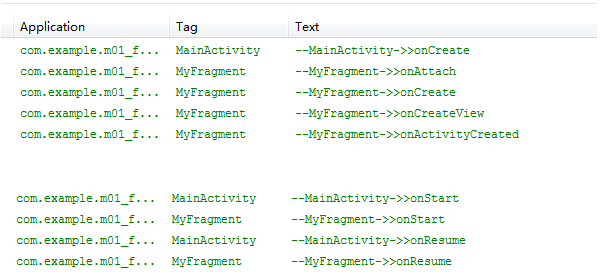
点击一下home键（或接入电话），打印日志如下：
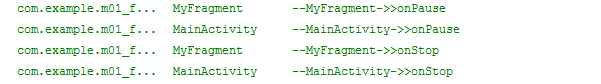
重新进入进入程序（或电话结束），打印日志如下：
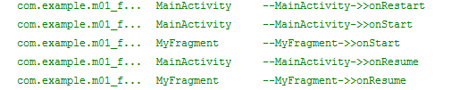
点击back键退出程序，打印日志如下：
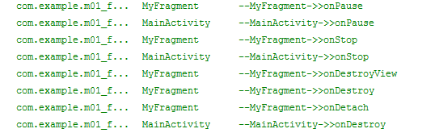
通过上面的日志，我们能够看出，Fragment和Activity的生命周期太相似了。只是有几个Activity中没有的新方法，需要重点介绍一下：
onAttach方法：Fragment和Activity建立关联的时候调用（获得activity的传递的值）
八.Fragment返回栈的管理： 将Fragment添加到返回栈中：
假设现在我们有两个Fragment：Fragment01和Fragment02，我们现在从Fragment01的界面跳到Fragment02，然后按Back键，发现程序是直接退出了，而不是返回到Fragment01。如果现在想实现以下功能：从Fragment01的界面跳到Fragment02，然后按Back键，会返回到Fragment01。这个功能该怎么实现呢？这其实就利用到了返回栈的知识。
其实很简单，FragmentTransaction中提供了一个addToBackStack()方法，可以将一个事务添加到返回栈中。
我们先回顾一下之前动态加载Fragment的代码，然后在此基础之上，增加一行代码就可以将Fragment添加到返回栈中：（即第07行代码）
1 2 3 4 5 6 7 8 9 //步骤一：添加一个FragmentTransaction的实例 FragmentManager fragmentManager =getFragmentManager(); FragmentTransaction transaction = fragmentManager.beginTransaction(); //步骤二：用add()方法加上Fragment的对象 RightFragment rightFragment = new RightFragment(); transaction.add(R.id.right, rightFragment); transaction.addToBackStack(null); //步骤三：调用commit()方法使得FragmentTransaction实例的改变生效 transaction.commit();
第07行代码：我们在事务提交之前调用了FragmentTransaction的addToBackStack()方法，它可以接受一个名字用于描述返回栈的状态，，一般传入null即可。
【实例】现在通过代码来实现以下界面（下面的图片为程序运行时加载的首页），并且把每一个Fragment都加入到返回栈当中去，然后观察其生命周期的变化。完整代码如下：
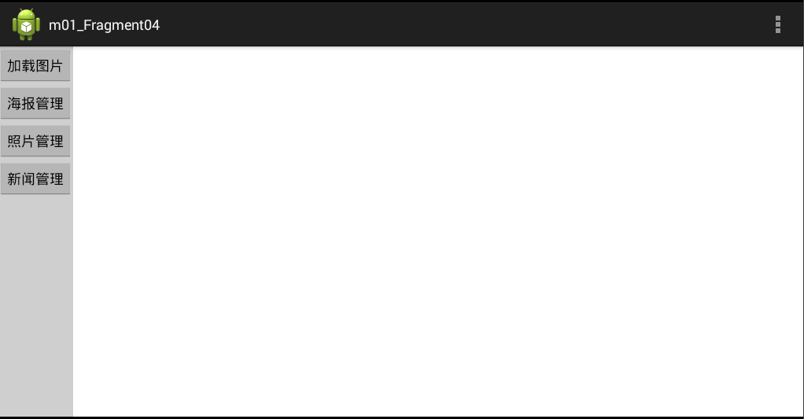
首先新建工程文件m01_Fragment04，然后开始我们的代码之旅：
我们先把右侧的四个Fragment建起来吧：
Fragment01.java主要部分的代码如下：
1 2 3 4 5 6 7 8 9 10 11 12 13 14 15 16 17 18 19 20 21 22 23 24 25 26 package com.example.m01_fragment04; import android.app.Fragment; import android.os.Bundle; import android.view.LayoutInflater; import android.view.View; import android.view.ViewGroup; public class Fragment01 extends Fragment { @Override public void onCreate(Bundle savedInstanceState) { super.onCreate(savedInstanceState); } @Override public View onCreateView(LayoutInflater inflater, ViewGroup container, Bundle savedInstanceState) { View view = inflater.inflate(R.layout.f1, null); return view; } @Override public void onPause() { super.onPause(); } }
为避免啰嗦，这里就不把Fragment01生命周期中的其他函数罗列出来了，我们只要知道在实际代码中这些函数都是加了的。
Fragment01的布局文件f1.xml的代码如下：
1 2 3 4 5 6 7 8 9 10 11 12 13 <?xml version="1.0" encoding="utf-8"?> <LinearLayout xmlns:android="http://schemas.android.com/apk/res/android" android:layout_width="match_parent" android:layout_height="match_parent" android:orientation="vertical" > <TextView android:id="@+id/textView1" android:layout_width="wrap_content" android:layout_height="wrap_content" android:text="加载图片" /> </LinearLayout>
然后依次新建出Fragment02、Fragment03、Fragment04的java代码和布局文件。
MainActivity的布局文件activity_main.xml代码如下：
1 2 3 4 5 6 7 8 9 10 11 12 13 14 15 16 17 18 19 20 21 22 23 24 25 26 27 28 29 30 31 32 33 34 35 36 37 38 39 40 41 42 43 44 45 46 47 48 <LinearLayout xmlns:android="http://schemas.android.com/apk/res/android" xmlns:tools="http://schemas.android.com/tools" android:layout_width="match_parent" android:layout_height="match_parent" tools:context=".MainActivity" > <LinearLayout android:id="@+id/left" android:layout_width="wrap_content" android:layout_height="match_parent" android:background="#CCCCCC" android:orientation="vertical" > <Button android:id="@+id/button1" android:layout_width="wrap_content" android:layout_height="wrap_content" android:text="加载图片" /> <Button android:id="@+id/button2" android:layout_width="wrap_content" android:layout_height="wrap_content" android:text="海报管理" /> <Button android:id="@+id/button3" android:layout_width="wrap_content" android:layout_height="wrap_content" android:text="照片管理" /> <Button android:id="@+id/button4" android:layout_width="wrap_content" android:layout_height="wrap_content" android:text="新闻管理" /> </LinearLayout> <LinearLayout android:id="@+id/right" android:layout_width="0dp" android:layout_height="match_parent" android:layout_weight="1" android:orientation="vertical" > </LinearLayout> </LinearLayout>
其中，第一个LinearLayout表示左侧的按钮，第二个LinearLayout留给右边的Fragment。
MainActivity.java的代码如下：
1 2 3 4 5 6 7 8 9 10 11 12 13 14 15 16 17 18 19 20 21 22 23 24 25 26 27 28 29 30 31 32 33 34 35 36 37 38 39 40 41 42 43 44 45 46 47 48 49 50 51 52 53 54 55 56 57 58 59 60 61 62 63 64 65 66 67 68 69 70 71 72 73 74 75 package com.example.m01_fragment04; import android.os.Bundle; import android.app.Activity; import android.app.FragmentManager; import android.app.FragmentTransaction; import android.view.Menu; import android.view.View; import android.view.View.OnClickListener; import android.widget.Button; public class MainActivity extends Activity implements OnClickListener{ private FragmentManager manager; private FragmentTransaction transaction; private Button button1,button2,button3,button4; @Override protected void onCreate(Bundle savedInstanceState) { super.onCreate(savedInstanceState); setContentView(R.layout.activity_main); manager = getFragmentManager(); button1 = (Button)this.findViewById(R.id.button1); button1.setOnClickListener(this); button2 = (Button)this.findViewById(R.id.button2); button2.setOnClickListener(this); button3 = (Button)this.findViewById(R.id.button3); button3.setOnClickListener(this); button4 = (Button)this.findViewById(R.id.button4); button4.setOnClickListener(this); } @Override public boolean onCreateOptionsMenu(Menu menu) { // Inflate the menu; this adds items to the action bar if it is present. getMenuInflater().inflate(R.menu.main, menu); return true; } //通过点击不同的按钮，跳转到不同的Fragment @Override public void onClick(View v) { // TODO Auto-generated method stub transaction = manager.beginTransaction(); switch (v.getId()) { case R.id.button1: Fragment01 fragment01 = new Fragment01(); transaction.replace(R.id.right, fragment01, "fragment01"); transaction.addToBackStack("fragment01");// 添加到Activity管理的回退栈中。 break; case R.id.button2: Fragment02 fragment02 = new Fragment02(); transaction.replace(R.id.right, fragment02, "fragment02"); transaction.addToBackStack("fragment02");// 添加到Activity管理的回退栈中。 break; case R.id.button3: Fragment03 fragment03 = new Fragment03(); transaction.replace(R.id.right, fragment03, "fragment03"); transaction.addToBackStack("fragment03");// 添加到Activity管理的回退栈中。 break; case R.id.button4: Fragment04 fragment04 = new Fragment04(); transaction.replace(R.id.right, fragment04, "fragment04"); transaction.addToBackStack("fragment04");// 添加到Activity管理的回退栈中。 break; } transaction.commit(); } }
上当代码中，通过点击不同的按钮，就能跳到对应的Fragment，而这四个Fragment都已经加入到了返回栈当中。运行程序之后，也是这样的。
注意第46行和第72行，transaction = manager.beginTransaction()意味着开始，transaction.commit()意味着结束。
我们就其中的fragment01和fragment02来讨论一下他们的生命周期的变化：
运行程序后，界面如下，没有任何fragment被加载：
点击左侧第一个按钮，加载fragment01：
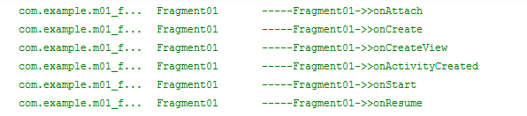
点击左侧第二个按钮，加载fragment02（此时fragment01被替换，并被压到了栈当中）：
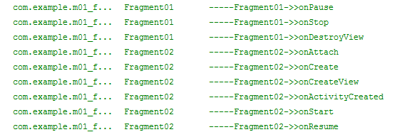
注：如果fragment01在替换的时候没有被压到栈中，那就会被销毁，在执行完onDestroyView()方法后，会继续执行onDestroy()和onDetach()方法。
按Back键，fragment01重新返回到屏幕：（fragment02被销毁）
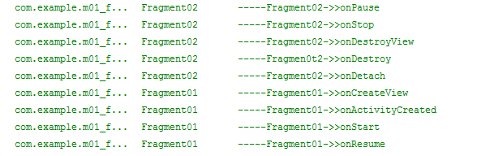
再按Back键，fragment01被销毁：
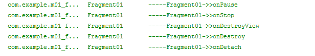
注：Fragment的返回栈由Activity管理；而Activity的返回栈由系统管理。
九.接口回调的简单引入： 我们先来看一个简单的接口回调的例子：
新建一个Java工程，然后新建一个包。然后新建一个A.java文件：
A.java代码如下：
1 2 3 4 5 6 7 8 9 10 11 12 13 14 15 16 17 18 19 20 21 22 23 24 package com.cn.callback; public class A { public A() { } //下载图片的操作 public void loadImage(String image_path,final CallBack callBack) { new Thread(new Runnable(){ public void run() { // TODO Auto-generated method stub String msg = "Hello world"; callBack.getResult(msg); } }).start(); } public interface CallBack { public void getResult(String result); } }
第21至23行就是回调方法。
新建B.java，代码如下：
1 2 3 4 5 6 7 8 9 10 11 12 13 14 15 16 17 18 19 20 package com.cn.callback; import com.cn.callback.A.CallBack; public class B { public B(){ } public static void main(String args[]) { A a = new A(); a.loadImage("http://www.baidu.com/a.gif", new CallBack() { public void getResult(String result) { // TODO Auto-generated method stub System.out.println(result); } }); } }
最后程序运行的结果如下：
关于接口回调，有一个博客，不过现在还不能完全理解，附上链接：
一个经典例子让你彻彻底底理解java回调机制：http://blog.csdn.net/xiaanming/article/details/8703708
十.Fragment和Activity的交互：
在Fragment中调用Activity中的方法：
1 2 3 4 5 6 7 8 9 10 11 12 13 14 15 public View onCreateView(LayoutInflater inflater, ViewGroup container, Bundle savedInstanceState) { View view = inflater.inflate(R.layout.fragment_left, null); button = (Button) view.findViewById(R.id.button1); button.setOnClickListener(new OnClickListener() { @Override public void onClick(View v) { // TODO Auto-generated method stub EditText editText = (EditText) getActivity().findViewById(R.id.editText); Toast.makeText(getActivity(), editText.getText().toString(), 1).show(); } }); return view; }
第09行代码是核心，通过getActivity()方法来获得Activity的实例，然后就可以调用findViewById()的方法得到其中的EditText控件。
在Activity中调用Fragment中的方法：（要用到接口回调）
1 ExampleFragment fragment = (ExampleFragment) getFragmentManager().findFragmentById(R.id.example_fragment);
具体例子稍后再讲。
Fragment与Fragment之间的通信：
十一.创建事件回调（在Activity中获取Fragment中的值）： 一些情况下，可能需要fragment和activity共享事件，一个比较好的做法是在fragment里面定义一个回调接口，然后要求宿主activity实现这个接口。当activity通过这个接口接收到一个回调，它可以让同布局中的其他fragment分享这个信息。
例如，一个新闻显示应用在一个activity中有两个fragment，一个fragment A显示文章题目的列表，一个fragment B显示文章。所以当一个文章被选择的时候，fragment A必须通知activity，然后activity通知fragment B，让它显示这篇文章。（例子的代码见官方文档）
我们现在举一个其他的例子：
【实例】在Fragment中输入值，点击Activity中的按钮，弹出吐司，显示之前输入的值。其实就是让Fragment中的文本显示在Activity中
我们在平板的左侧加入一个fragment，完整代码如下：
fragment_left.xml代码如下：
1 2 3 4 5 6 7 8 9 10 11 12 13 14 15 <?xml version="1.0" encoding="utf-8"?> <LinearLayout xmlns:android="http://schemas.android.com/apk/res/android" android:layout_width="match_parent" android:layout_height="match_parent" android:orientation="vertical" > <EditText android:id="@+id/editText1" android:layout_width="match_parent" android:layout_height="wrap_content" android:ems="10" > <requestFocus /> </EditText> </LinearLayout>
其实就是加了一个EditText,方便在里面输入文本内容。
然后在frament中加一个接口回调，让它在Activity当中调用，方便获取输入文本的值。LeftFragment.java的代码如下：
1 2 3 4 5 6 7 8 9 10 11 12 13 14 15 16 17 18 19 20 21 22 23 24 25 26 27 28 29 30 31 32 33 34 35 36 37 38 39 40 41 42 43 package com.example.m01_fragment05; import android.app.Fragment; import android.os.Bundle; import android.view.LayoutInflater; import android.view.View; import android.view.ViewGroup; import android.widget.Button; import android.widget.EditText; public class LeftFragment extends Fragment { private Button button; private EditText editText; @Override public void onCreate(Bundle savedInstanceState) { super.onCreate(savedInstanceState); } @Override public View onCreateView(LayoutInflater inflater, ViewGroup container, Bundle savedInstanceState) { View view = inflater.inflate(R.layout.fragment_left, null); editText = (EditText) view.findViewById(R.id.editText1); return view; } @Override public void onPause() { super.onPause(); } //接口回调 public void getEditText(CallBack callBack) { String msg = editText.getText().toString(); callBack.getResult(msg); } public interface CallBack { public void getResult(String result); } }
代码解释如下：
第25行：一定要为editText加一个id，不然会报空指针异常的错误；
34至42行：添加一个接口回调，用于获取文本的值，然后稍后再Activity当中进行调用。
activity_main.xml的代码如下：
1 2 3 4 5 6 7 8 9 10 11 12 13 14 15 16 17 18 19 20 21 22 23 24 25 26 27 28 29 30 31 32 33 34 35 36 <LinearLayout xmlns:android="http://schemas.android.com/apk/res/android" xmlns:tools="http://schemas.android.com/tools" android:layout_width="match_parent" android:layout_height="match_parent" android:orientation="horizontal" tools:context=".MainActivity" > <LinearLayout android:id="@+id/left" android:layout_width="224dp" android:layout_height="match_parent" android:background="#CCCCCC" android:orientation="vertical" > </LinearLayout> <LinearLayout android:layout_width="wrap_content" android:layout_height="match_parent" android:orientation="vertical" > <EditText android:id="@+id/editText1" android:layout_width="match_parent" android:layout_height="wrap_content" android:ems="10" > <requestFocus /> </EditText> <Button android:id="@+id/button" android:layout_width="wrap_content" android:layout_height="wrap_content" android:text="获得Fragment的值" /> </LinearLayout> </LinearLayout>
其实一共就两个线性布局，左边的现性布局留给fragment，右边的线性性局留给Activity。
MainActivity.java的代码如下：
1 2 3 4 5 6 7 8 9 10 11 12 13 14 15 16 17 18 19 20 21 22 23 24 25 26 27 28 29 30 31 32 33 34 35 36 37 38 39 40 41 42 43 44 45 46 47 48 49 50 51 52 53 package com.example.m01_fragment05; import com.example.m01_fragment05.LeftFragment.CallBack; import android.app.Activity; import android.app.FragmentManager; import android.app.FragmentTransaction; import android.os.Bundle; import android.view.Menu; import android.view.View; import android.view.View.OnClickListener; import android.widget.Button; import android.widget.Toast; public class MainActivity extends Activity { private FragmentManager manager; private FragmentTransaction transaction; private Button button; @Override protected void onCreate(Bundle savedInstanceState) { super.onCreate(savedInstanceState); setContentView(R.layout.activity_main); button = (Button)findViewById(R.id.button); //动态加载leftFragment manager = getFragmentManager(); transaction = manager.beginTransaction(); final LeftFragment leftFragment = new LeftFragment(); transaction.add(R.id.left, leftFragment, "left"); transaction.commit(); button.setOnClickListener(new OnClickListener() { @Override public void onClick(View v) { //点击按钮后，通过接口回调，获取fragment当中EditText的值，并弹出吐司 leftFragment.getEditText(new CallBack(){ @Override public void getResult(String result) { // TODO Auto-generated method stub Toast.makeText(MainActivity.this, result, 1).show(); } }); } }); } @Override public boolean onCreateOptionsMenu(Menu menu) { // Inflate the menu; this adds items to the action bar if it is present. getMenuInflater().inflate(R.menu.main, menu); return true; } }
我们在Activity当中动态加载Fragment，然后点击按钮，通过接口回调，获取fragment当中EditText的值，并弹出吐司。
程序运行后，在左侧的Fragment的EditText当中输入值，点击右侧的按钮，弹出吐司，效果如下：
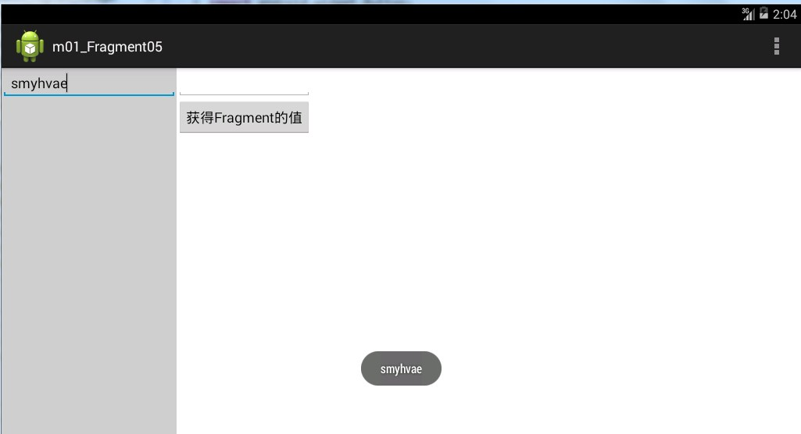


听首歌放松一下！